버전 2026-10-03 · 설치·실행 방법은 「설치·실행 안내서(A4 1장)」를 먼저 보세요
한 줄 요약 — 원료·부자재 단가와 환율을 한 곳에 입력해 두면, 제품별 원가와 납품가를 자동으로 계산하고, 단가가 시간에 따라 얼마나 변했는지(숫자·그래프·엑셀)를 보여 주는 회사 PC 전용 프로그램입니다.
| 항목 | 기존 (제품별 엑셀 시트) | 이 프로그램 |
|---|---|---|
| 원료·부자재 단가 | 시트마다 따로 입력 → 같은 원료인데 단가가 서로 다를 수 있음 | 단가를 한 곳에서 관리, 모든 제품에 자동 반영 |
| 단가 변동 기록 | 시트를 복사해 날짜별로 보관 | 날짜별 단가 이력 저장, 일별 그래프·변동률·연도별 비교 |
| 환율 | 따로 계산 | 미국·베트남·튀르키예·기타 통화 환율 반영, 환율이 원가에 준 영향 분석 |
| 판매처별 비용 | 시트에 수식으로 일부 반영 | 마트별 물류비, 온라인 업체별 수수료·홍보비·기획전·택배비를 판매처로 등록 |
| 납품가 맞추기 | 납품가를 손으로 바꿔 가며 맞춤(순환 참조) | 판관비·마진·수수료 등을 포함해 한 번에 역산 |
| 견적 보관 | 파일 복사본 | 그 시점의 단가·환율·규칙 그대로 이력 저장, 두 견적 비교 |
pricing\data\pricing.db 파일 하나에만 저장됩니다. 인터넷으로 전송되지 않고, 다른 사람 PC와 공유되지 않습니다.① 우리 원가표 작성에 필요한 항목이 빠지지 않았는지 ② 화면과 용어가 이해되는지 ③ 입력이 불편하지 않은지 ④ 계산 방식이 실무와 맞는지 확인하는 것입니다. 맞지 않거나 어색한 부분은 이 문서 맨 뒤 「의견 기록 양식」에 적어 주세요.
화면 곳곳의 (?) 아이콘에 마우스를 올리면 그 항목의 설명이 나옵니다. 아래는 자주 나오는 용어입니다.
| 용어 | 뜻 |
|---|---|
| 봉수 | 한 세트에 들어가는 낱개 수. 하루견과 30입이면 봉수 = 30. |
| 배합비 (구성비) | 낱개 1봉 안에서 각 원료가 차지하는 비율. 전부 더해 100%가 되어야 합니다 (아몬드 30% + 호두 25% + …). |
| 1봉 중량 | 낱개 1봉의 내용물 무게(g). 원료별 사용량 = 1봉 중량 × 구성비 × 봉수. |
| 로스 (loss) | 가공·포장 중 줄어들거나 버려지는 비율. 원료는 수분·소분·선별 loss의 합, 부자재는 별도 loss%를 씁니다. |
| 로스팅비 · 선별비 | 원료를 볶고(로스팅) 골라내는(선별) 가공 비용(원/kg). 기본 단가에 이미 포함돼 있으면 0으로 둡니다. |
| 부자재 분류 | 롤포장지 · 포장지 · 인케이스 · 카톤박스 · 소분비 · 기타. 원가 구성표에서 이 분류별로 합산됩니다. |
| 봉수 연동 | 부자재 수량을 수량 × 봉수로 계산. 소포장지·소분비·롤포장지처럼 봉수에 비례하는 부자재에 사용. 인케이스·카톤박스처럼 세트당 고정이면 '고정'. |
| 나누는 수 | 카톤박스 입수처럼 여러 세트가 함께 쓰는 부자재의 단가를 나누는 값 (8입 카톤이면 8). |
| 직접원가 | 원료비 + 로스팅비·선별비 + 원재료 로스 + 부자재 + 운송비 + 3PL 이용료. |
| 센터도착가 | 직접원가 + 판관비 + 마진. 물류센터에 도착한 시점의 가격. |
| 납품가 | 거래처에 청구하는 가격(VAT 별도). 센터도착가에 판매처 비용(물류비·수수료·홍보비·기획전·택배비)까지 더한 원가합계를 기준으로 역산합니다. |
| 납품가 기준 % | 판관비·마진·수수료 등은 '납품가의 몇 %'입니다. 납품가를 알아야 금액이 나오는 구조라서 프로그램이 한 번에 역산해 줍니다. |
| 실질 마진 | 설정한 마진 + 납품가 반올림으로 남는 차익. 마이너스면 적자입니다. |
| 단가·환율 기준일 | 견적을 계산할 때 이 날짜에 유효한 단가와 환율을 쓰는 기능. 과거 날짜를 고르면 그때의 원가를 재현합니다. 적용일이 미래인 단가는 그날부터 적용됩니다. |
| 환율 (2종류) | ① 환율 메뉴 = 날짜별 시세 기록(조회·그래프·'자동' 환산용). ② 원료·부자재 입력 화면의 환율 = 그 단가를 받은 당시의 거래 환율(기본은 '고정'). 목적이 다릅니다. |
| 환율 적용 방식 | 고정: 입력한 환율로 계산, 시세가 바뀌어도 그 단가의 원화 값은 그대로. 자동: 환율 메뉴의 날짜별 환율을 따라가 환율이 바뀌면 원화 원가도 바뀜. |
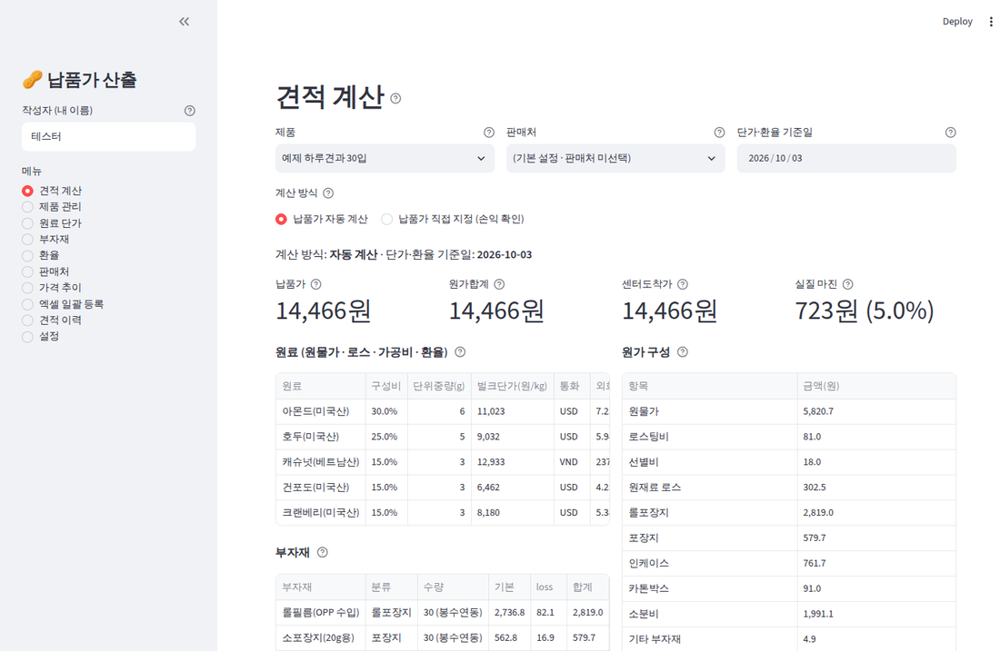
첫 화면 — 왼쪽은 메뉴, 오른쪽은 선택한 메뉴의 화면입니다.
| 메뉴 | 언제 쓰나요? |
|---|---|
| 작성자 (내 이름) | 왼쪽 위 입력칸. 견적을 저장하려면 꼭 입력해야 합니다. 누가 만든 견적인지 이력에 남습니다. |
| 견적 계산 | 제품을 골라 원가·납품가를 계산하고, 저장하거나 엑셀로 받습니다. |
| 제품 관리 | 제품의 봉수, 배합표(원료 구성비), 부자재 구성을 등록합니다. 제품 복사(30입→60입)도 여기서. |
| 원료 단가 | 원료(견과 등) 정보와 날짜별 단가·환율을 등록합니다. |
| 부자재 | 포장지·인케이스·카톤박스 등 부자재 정보와 날짜별 단가를 등록합니다. |
| 환율 | 미국·베트남·튀르키예·(기타) 통화의 날짜별 환율을 입력하고 이력을 조회합니다. |
| 판매처 | 마트(물류비)·온라인 업체(수수료·홍보비·기획전·택배비)를 등록합니다. |
| 가격 추이 | 원료·부자재 가격이 기간 동안 어떻게 변했는지 그래프·변동률·환율 영향으로 봅니다. |
| 엑셀 일괄 등록 | 원료·부자재 단가와 환율을 엑셀로 한꺼번에 등록합니다. |
| 견적 이력 | 저장한 견적을 조회·엑셀 다운로드·두 견적 비교합니다. |
| 설정 | 판관비·물류비·마진 기본값, 납품가 반올림, 이력 삭제 잠금, 전체 데이터 엑셀 내보내기. |
처음에는 아래 순서대로 하면 막힘이 없습니다. (모의 테스트는 1번에서 예제 엑셀을 올리면 2~5번을 건너뛸 수 있습니다.)
| 순서 | 메뉴 | 하는 일 | 비고 |
|---|---|---|---|
| 0 | 작성자 | 사이드바에 내 이름 입력 | 견적 저장에 필요 |
| 1 | 설정 | 판관비·물류비·마진 사용 여부와 %, 납품가 반올림 방식 정하기 | 처음 한 번 |
| 2 | 환율 | 사용할 통화(미국·베트남·튀르키예, 필요하면 기타)의 환율 입력 | 수입 품목이 있을 때 |
| 3 | 원료 단가 | 원료 등록 + 단가(원화 또는 외화) 입력 | 엑셀 일괄 등록 가능 |
| 4 | 부자재 | 부자재 등록 + 단가 입력 | 엑셀 일괄 등록 가능 |
| 5 | 판매처 | 마트·온라인 업체 비용 등록 | 선택 사항 |
| 6 | 제품 관리 | 제품 등록: 봉수, 1봉 중량, 배합표, 부자재 구성 | 제품마다 한 번 |
| 7 | 견적 계산 | 제품·판매처·기준일 선택 → 원가·납품가 확인 → 저장 / 엑셀 | 매번 |
| 8 | 견적 이력 · 가격 추이 | 저장한 견적 조회·비교, 가격 변동 분석 | 필요할 때 |
원료 단가(또는 부자재) 메뉴에서 해당 품목을 고르고, 새 단가와 단가 적용일을 입력해 저장하면 이력이 한 줄 추가됩니다. 제품·견적 화면은 별도 수정 없이 새 단가를 자동 반영합니다. 이전 견적 이력은 저장 당시 값 그대로 유지됩니다.
환율 메뉴에 오늘(또는 해당 날짜) 환율을 추가하세요. 환율 방식이 '자동'인 단가는 원화 원가가 따라서 바뀝니다. '고정'(기본)인 단가는 단가를 받은 당시 환율을 그대로 쓰므로 바뀌지 않습니다.
하는 일 — 원료·부자재 단가와 일별 환율을 엑셀로 한 번에 등록·수정합니다. 하나씩 입력하는 수고를 크게 줄여 줍니다.
pricing\sample 폴더의 예제 파일을 그대로 사용)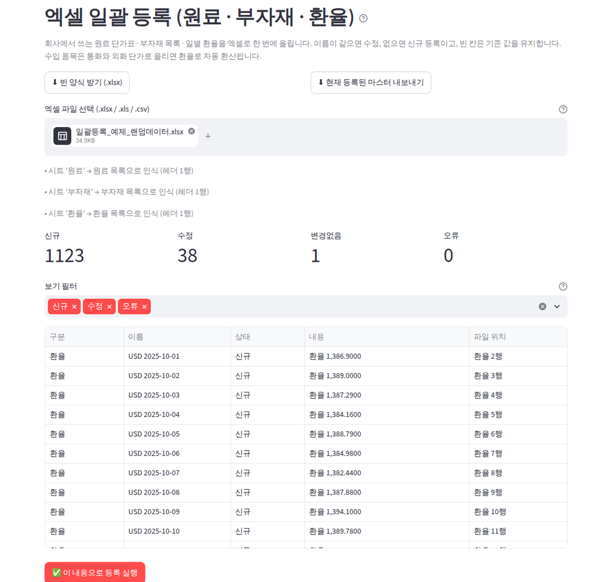
예제 파일을 올린 직후의 미리보기 (신규 1,123건 · 수정 38건 · 오류 0)
하는 일 — 날짜별 환율 시세를 기록하고, 기간별 환율 그래프를 봅니다.
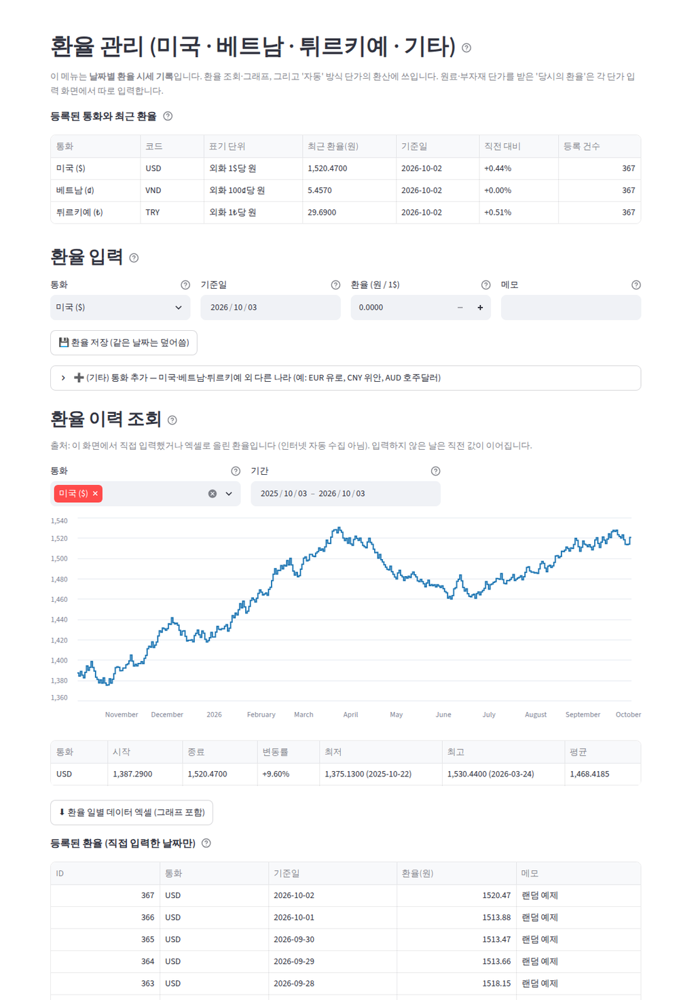
환율 메뉴 — 통화 표, 환율 입력, 이력 조회 그래프
하는 일 — 원료의 기본 정보와 날짜별 단가를 관리합니다. 수입 원료는 통화·환율과 함께 입력합니다.
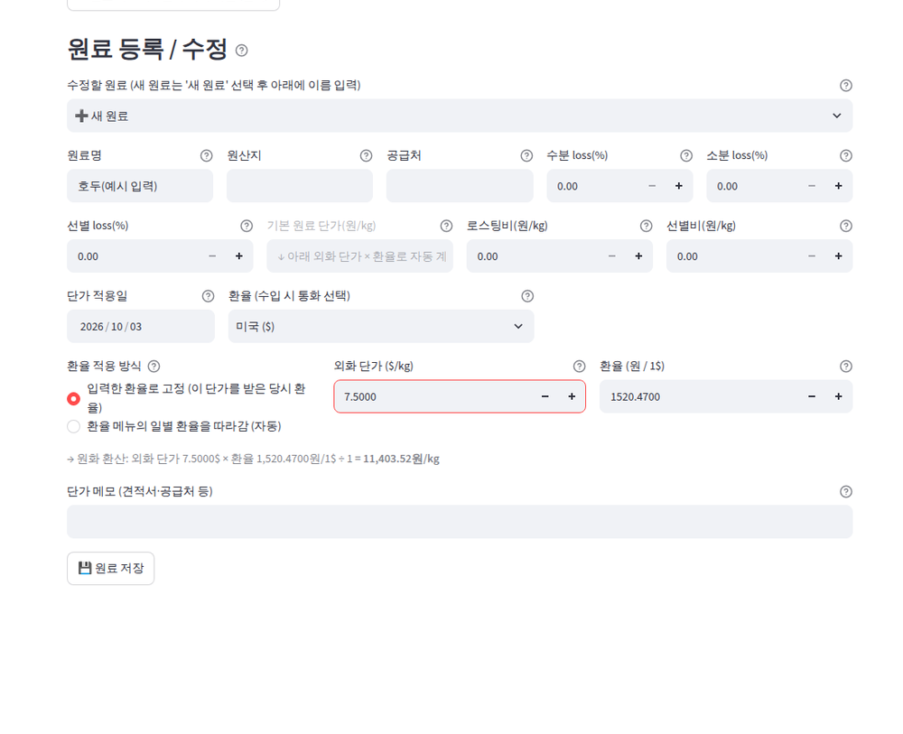
원료 등록/수정 폼 — 미국($) 선택 시 외화 단가와 환율 입력칸이 나타나고 원화 환산액이 바로 계산됩니다
하는 일 — 롤필름·소포장지·인케이스·카톤박스 등 부자재와 날짜별 단가를 관리합니다. 입력 방법은 원료 단가와 같습니다.
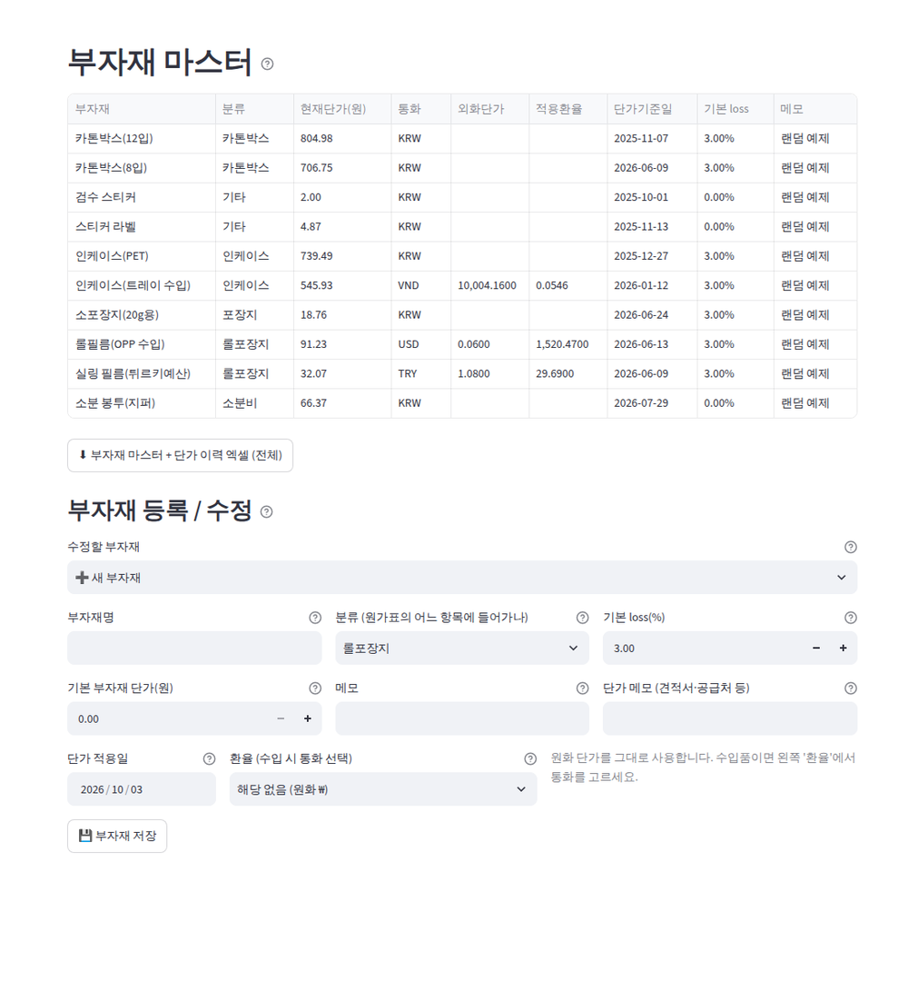
부자재 메뉴 — 분류와 loss, 단가·환율 입력
견적의 원가 구성 표에서 부자재가 분류별(롤포장지·포장지·인케이스·카톤박스·소분비·기타)로 합산되어 보입니다. 실무의 원가표 항목(⑥ 롤 포장지, ⑦ 인케이스, ⑧ 카톤박스 등)과 맞춰 분류하세요.
하는 일 — 마트(오프라인)와 온라인 업체별 비용을 등록해 두면, 견적에서 판매처만 고르면 해당 비용이 납품가에 반영됩니다.
| 유형 | 입력 항목 |
|---|---|
| 오프라인(마트) | 물류비율(%), 정액 물류비(원/개), 물류비율을 VAT 포함 납품가 기준으로 계산할지 |
| 온라인 | 물류비(위와 동일) + 업체 수수료율, 업체 홍보비율, 기획전 비용률(%) + 정액, 택배비(원/개), 수수료류를 VAT 포함 기준으로 할지 |
| 공통 | 이 판매처만 다른 판관비율·마진율을 쓰려면 체크 (체크 안 하면 설정의 기본값) |
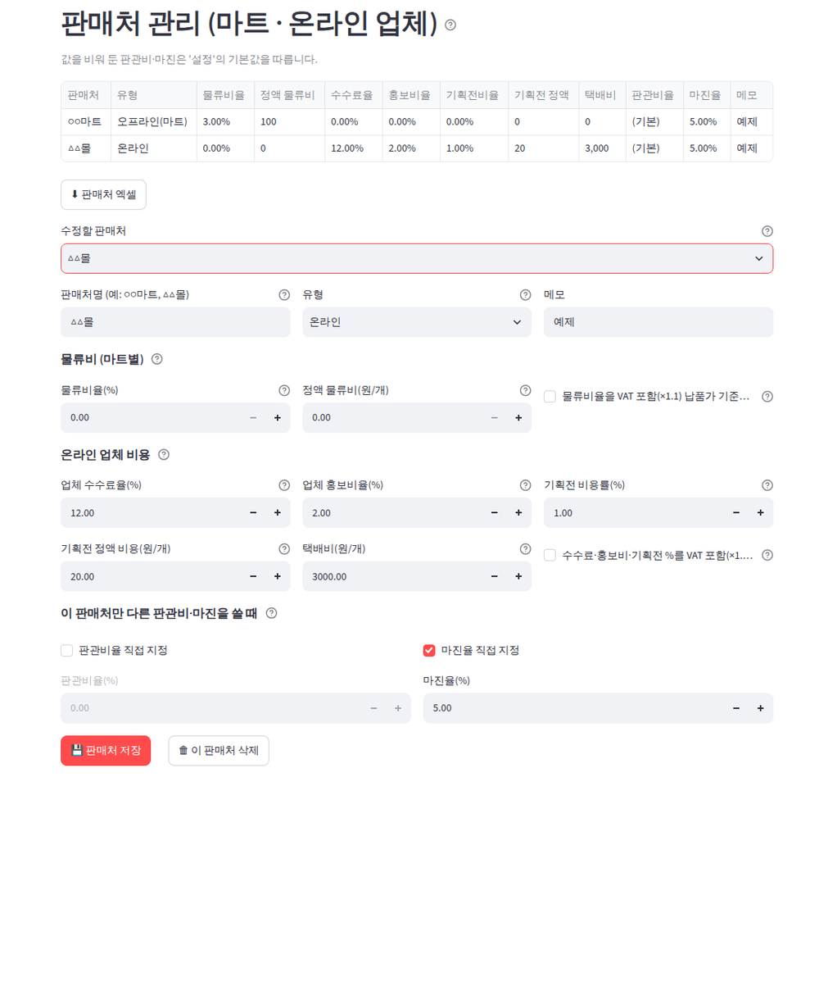
판매처 등록 화면 (온라인 유형 예시)
하는 일 — 제품 하나를 이루는 봉수, 1봉 중량, 원료 배합, 부자재 구성을 등록합니다.
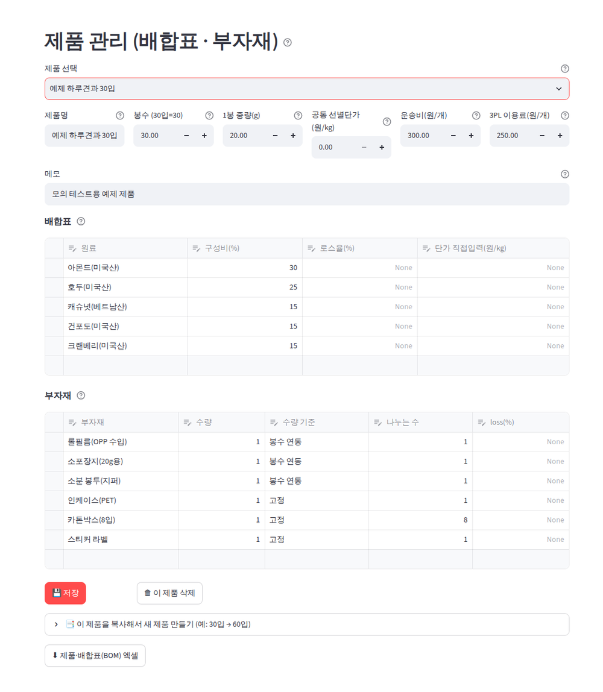
제품 관리 — 위쪽은 제품 기본 정보, 가운데는 배합표, 아래쪽은 부자재 표
화면 아래 📑 이 제품을 복사해서 새 제품 만들기에서 새 이름과 새 봉수를 넣으면 됩니다. '봉수 연동' 부자재(소분비·소포장지·롤필름 등)는 새 봉수에 맞춰 수량이 자동으로 늘고, '고정' 부자재(인케이스·카톤박스)는 그대로입니다.
하는 일 — 제품·판매처·기준일을 고르면 원가와 납품가를 계산합니다.
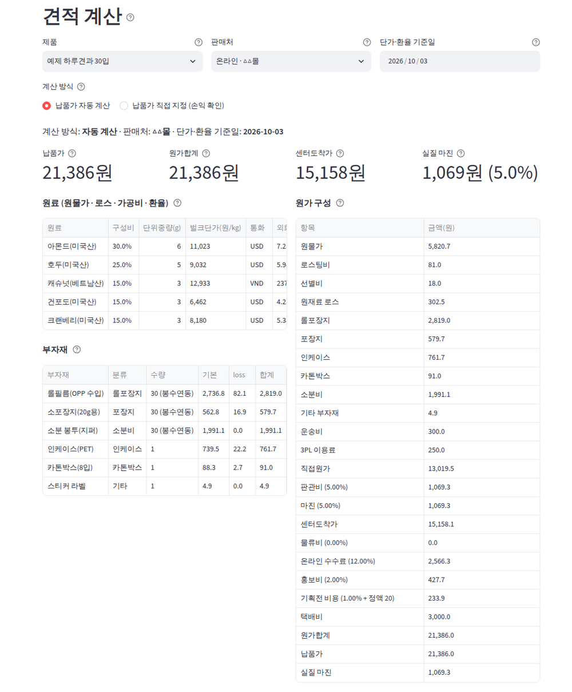
견적 계산 화면 (온라인 판매처 선택 예시)
견적 화면 아래 접힌 상자를 열면, 수입 원료·부자재 중 외화 단가인 품목이 직접원가의 몇 %를 차지하는지, 그리고 해당 통화 환율이 ±5%·±10% 변하면 납품가가 몇 원(몇 %) 변하는지를 보여 줍니다. 원화 단가 품목은 영향이 없습니다.
기준일을 과거 날짜로 바꾸면 그날 유효했던 단가·환율로 계산합니다 (예: 지난 분기 견적 재현). 해당 날짜 이전에 단가 기록이 없으면 가장 오래된 단가를 쓰고 경고를 표시합니다.
하는 일 — 저장한 견적을 조회하고, 엑셀로 받고, 두 견적을 비교합니다.
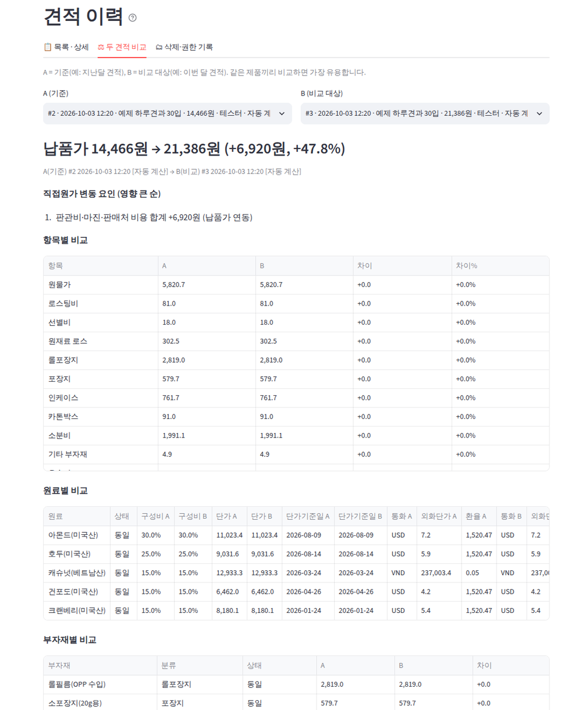
두 견적 비교 — 단가가 달라진 원인이 요인 순위로 표시됩니다
여러 명이 쓸 때 실수로 지우는 것을 막기 위해, 설정 메뉴에서 허용해야 삭제할 수 있습니다. 삭제하면 기록이 남습니다.
하는 일 — 원료·부자재 단가가 기간 동안 어떻게 변했는지 보고, 오르내린 이유가 현지 가격 때문인지 환율 때문인지 확인합니다. 4개 탭이 있습니다.
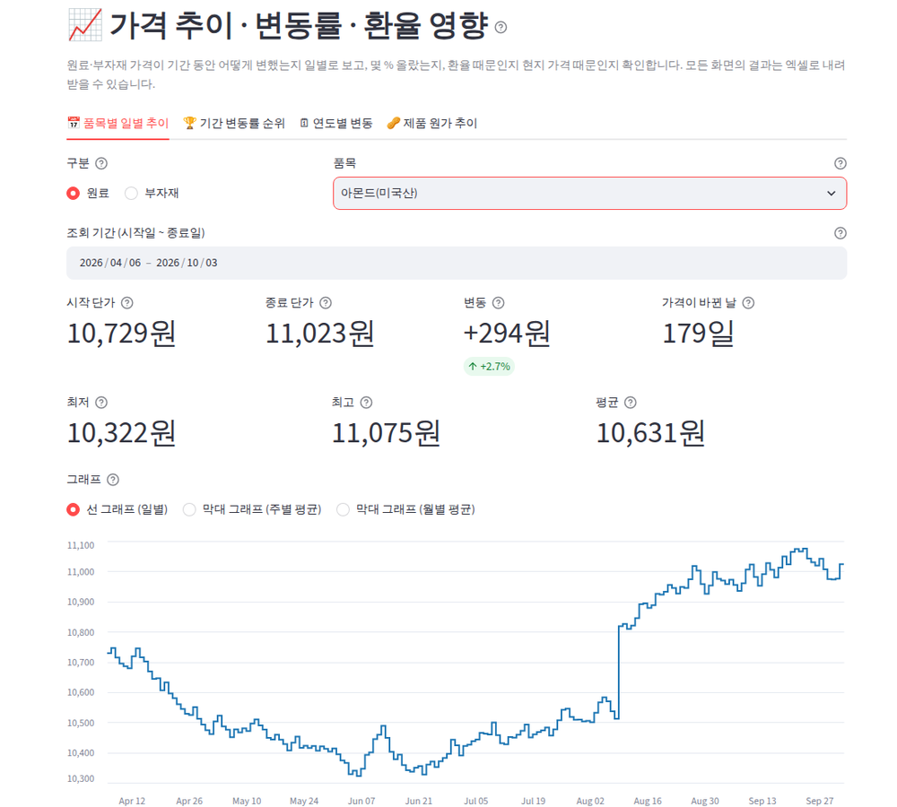
① 품목별 일별 추이 — 시작·종료 단가, 변동률, 일별 선 그래프 (수입 원료 예시)
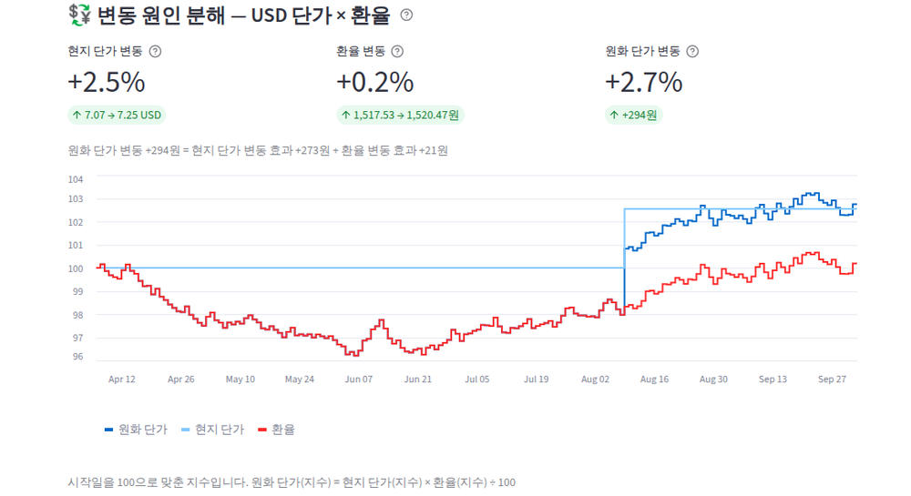
수입 원료의 변동 원인 분해 — 현지 단가 +2.5%, 환율 +0.2% → 원화 단가 +2.7% (아래 그래프는 시작일=100 지수)
모든 원료(또는 부자재)의 기간 변동률을 막대 그래프와 표로 비교합니다. 상승·하락·변동 없음 품목 수도 보여 줍니다. 수입 품목은 현지가 효과와 환율 효과가 따로 표시됩니다.
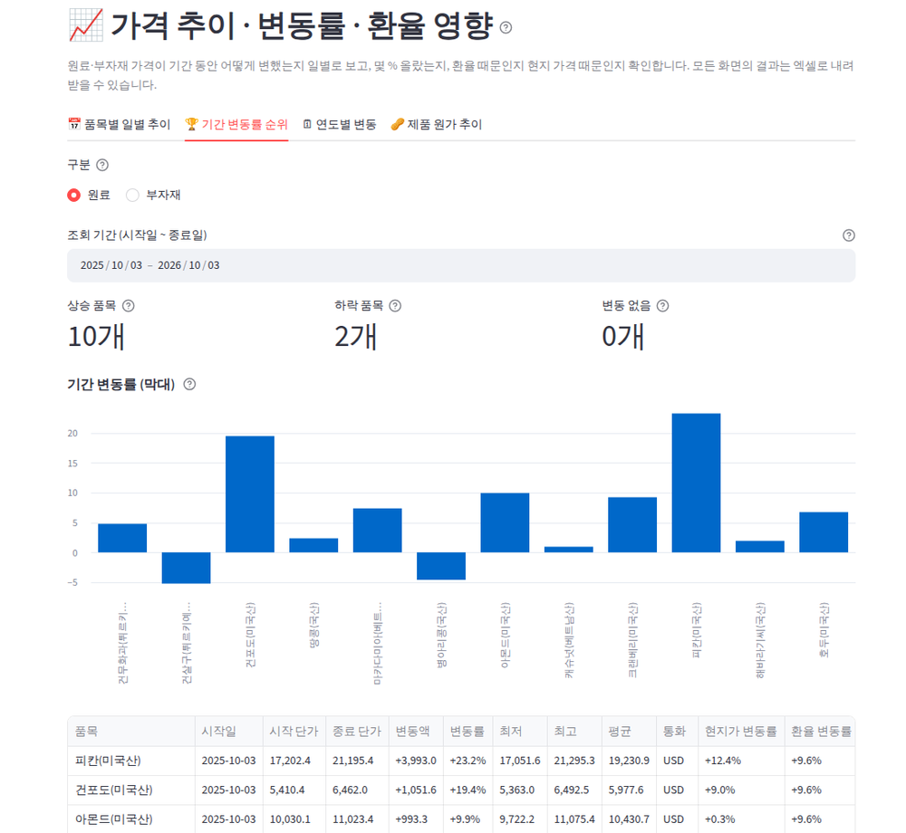
② 기간 변동률 순위
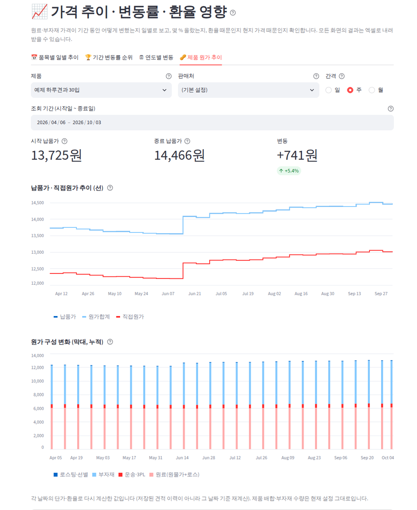
④ 제품 원가 추이 — 납품가·직접원가 선 그래프와 원가 구성(누적 막대)
각 탭 아래 ⬇ 엑셀 버튼 — 일별 데이터, 집계, 변동률, 연도별 표, 엑셀 그래프가 포함됩니다. 환율 이력은 환율 메뉴, 전체 데이터는 설정 메뉴에서도 받을 수 있습니다.
하는 일 — 견적 계산의 기본 규칙과 이력 보호, 전체 데이터 내보내기를 설정합니다.
| 항목 | 설명 |
|---|---|
| 판관비 사용 / 판관비율 | 판관비를 납품가에 포함할지와 납품가 기준 %. (예: 5 → 납품가의 5%) |
| 물류비 사용 / 물류비율 / VAT 포함 기준 | 판매처를 고르지 않았을 때 쓰는 기본 물류비 (선택 사항). 기본은 꺼짐. |
| 마진 사용 / 마진율 | 납품가에 마진을 따로 붙일지 (선택 사항). 기본은 꺼짐. |
| 납품가 반올림 | 1원 단위 반올림 / 10원 단위 올림 / 반올림 안 함. 10원 올림은 항상 원가 이상이 되도록 올려 약간의 차익이 남습니다. |
| 견적 이력 삭제 허용 | 기본은 잠금. 허용하면 견적 이력에서 삭제할 수 있고 삭제 기록이 남습니다. |
| 전체 데이터 엑셀 | 원료·부자재 마스터와 단가 이력, 환율 이력, 판매처, 제품 구성, 견적 이력 요약을 한 파일(여러 시트)로 저장. |
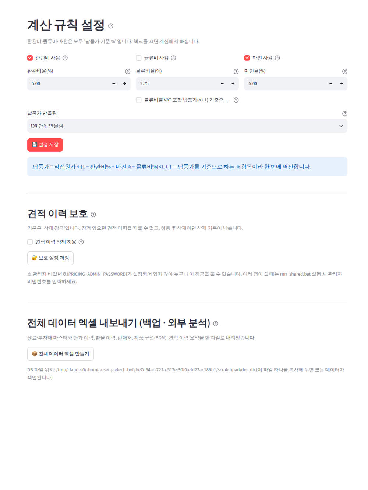
설정 화면
프로그램이 하는 계산을 순서대로 적었습니다. 기존 엑셀 원가표와 숫자가 다르면 아래 식과 비교해 보세요.
| 단계 | 계산식 |
|---|---|
| ① 원물가 (원료별) | 단가(원/kg) × 1봉 중량(g) × 구성비 × 봉수 ÷ 1000 (외화 단가는 환율로 원화 환산한 값) |
| ② 로스팅비 · 선별비 | 로스팅(선별) 단가(원/kg) × 원료 중량(kg). 제품 공통 선별단가는 총 중량에 적용 |
| ③ 원재료 로스 | 원물가 × 로스율 (수분+소분+선별 loss, 제품에서 개별 지정 가능) |
| ④ 부자재 | 단가 × 수량 ÷ 나누는 수 × (1 + loss). 수량이 '봉수 연동'이면 수량 × 봉수 |
| ⑤ 직접원가 | ① + ② + ③ + ④ + 운송비 + 3PL 이용료 |
| ⑥ 센터도착가 | 직접원가 + 판관비 + 마진 |
| ⑦ 판매처 비용 | 물류비(% + 정액) + 온라인 수수료 + 홍보비 + 기획전 비용(% + 정액) + 택배비 |
| ⑧ 원가합계 | 센터도착가 + 판매처 비용 |
| ⑨ 납품가 | (직접원가 + 정액 판매처 비용) ÷ (1 − 판관비% − 마진% − 물류비% − 수수료% − 홍보비% − 기획전%) 후 반올림 |
판관비·마진·수수료 등은 '납품가의 몇 %'입니다. 납품가가 정해져야 금액이 나오는데 납품가는 그 금액을 포함해서 정해지므로 서로 물려 있습니다. 기존 엑셀은 납품가를 손으로 바꿔 가며 맞췄지만, 이 프로그램은 위 ⑨번 식으로 한 번에 풉니다.
예제 파일(pricing\sample\일괄등록_예제_랜덤데이터.xlsx)을 엑셀 일괄 등록으로 먼저 올려 둔 상태에서 진행하세요. 각 시나리오가 끝나면 마지막 장 의견 기록 양식에 느낌을 적어 주세요.
확인 포인트 원료·부자재 표의 계산이 이해되는가? 용어가 어려운 곳이 있는가? 입력이 번거로운 곳은?
확인 포인트 우리 실제 비용 항목(마트별 물류비, 온라인 수수료·홍보비·기획전·택배비)이 빠짐없이 들어 있는가? 계산 방식(납품가 기준 %)이 실무와 맞는가?
확인 포인트 환율 입력 방식(환율 메뉴 vs 단가 입력 화면)이 이해되는가? 실무에서는 어느 쪽 환율을 쓰는가?
확인 포인트 그래프·변동률 표현이 업무에 쓸 만한가? 보고서에 넣고 싶은 형태가 따로 있는가? 엑셀 파일 구성은 쓸 만한가?
확인 포인트 비교 화면의 '변동 요인' 설명이 이해되는가? 비교할 때 더 필요한 정보는?
확인 포인트 과거 견적 재현이 실무에 필요한가? 필요한 형태는?
프로그램을 종료(검은 창 닫기)한 뒤 pricing\data 폴더를 삭제하고 run.bat을 다시 실행하세요. 완전히 빈 상태로 시작합니다.
| 질문 | 답 |
|---|---|
| 입력한 데이터는 어디에 저장되나요? 다른 사람과 공유되나요? | 이 PC의 pricing\data 폴더에만 저장되고 다른 PC와 공유되지 않습니다. (여러 명이 한 데이터를 쓰는 '공유 모드'는 별도 방식입니다.) |
| 단가를 잘못 입력했어요. | 원료 단가 / 부자재 메뉴에서 해당 품목을 고르고 화면 아래 단가 이력에서 해당 줄을 삭제한 뒤 다시 입력하세요. |
| 저장한 견적을 지우고 싶어요. | 기본은 잠금입니다. 설정 → 견적 이력 삭제 허용을 켠 뒤 견적 이력에서 삭제하세요. |
| 납품가 옆에 "적자" 경고가 떠요. | 납품가 직접 지정 모드에서 지정한 납품가가 원가합계보다 낮다는 뜻입니다. 지정가를 올리거나 원가를 점검하세요. |
| "단가가 등록되어 있지 않아 0원으로 계산" 경고가 떠요. | 배합표/부자재에 쓴 품목에 단가 이력이 없습니다. 해당 메뉴에서 단가를 입력하세요. 기준일을 과거로 두었다면 그 날짜 이전 기록이 없는 경우도 있습니다. |
| 환율이 바뀌었는데 원가가 안 바뀌어요. | 그 단가가 '고정' 환율 방식이면 입력한 환율을 그대로 씁니다. 따라가게 하려면 단가를 '자동' 방식으로 다시 입력하세요. |
| 엑셀 일괄 등록에서 오류가 나요. | 오류 표에 시트 이름과 줄 번호가 나옵니다. 해당 줄(분류 이름, 숫자 형식, 통화 코드 등)을 고쳐 다시 올리세요. 오류가 있는 동안에는 아무것도 등록되지 않습니다. |
| 프로그램을 끄려면? | 검은 창에서 Ctrl+C 또는 창 닫기. 데이터는 남아 있고 다시 run.bat을 실행하면 이어서 쓸 수 있습니다. |
이름: ______________________ 소속/업무: ______________________ 테스트 날짜: ____________
| 메뉴 | 쉬움 | 보통 | 어려움 | 어려웠던 점 / 이해가 안 된 용어 |
|---|---|---|---|---|
| 엑셀 일괄 등록 | □ | □ | □ | |
| 환율 | □ | □ | □ | |
| 원료 단가 | □ | □ | □ | |
| 부자재 | □ | □ | □ | |
| 판매처 | □ | □ | □ | |
| 제품 관리 | □ | □ | □ | |
| 견적 계산 | □ | □ | □ | |
| 견적 이력 / 비교 | □ | □ | □ | |
| 가격 추이 | □ | □ | □ | |
| 설정 | □ | □ | □ |
| 질문 | 답 / 의견 |
|---|---|
| 우리 원가표 작성에 필요한데 빠진 항목이 있나요? (원가·비용 항목) | |
| 판매처 비용(마트 물류비, 온라인 수수료·홍보비·기획전·택배비) 입력 방식이 실제 계약과 맞나요? | |
| 환율 입력 방식(환율 메뉴 + 단가 입력 시 직접 입력)이 업무 방식과 맞나요? 환율은 보통 어떤 기준(매매기준율 등)을 쓰나요? | |
| 가격 추이 그래프·변동률·엑셀 중 실제 보고에 쓸 만한 것과, 더 필요한 표현은? | |
| 기존 엑셀 원가표와 숫자가 다르게 나온 제품이 있나요? (제품명, 어느 항목이 다른지) |
화면 캡처를 함께 주시면 큰 도움이 됩니다. 캡처에는 실제 원가 숫자가 보이지 않게 가려 주세요.
| # | 메뉴 | 하려던 일 | 불편했던 점 / 오류 내용 | 바라는 점 / 제안 | 중요도 (상·중·하) |
|---|---|---|---|---|---|
| 1 | |||||
| 2 | |||||
| 3 | |||||
| 4 | |||||
| 5 | |||||
| 6 | |||||
| 7 | |||||
| 8 | |||||
| 9 | |||||
| 10 |
이 프로그램을 실제 업무에 쓴다면 ( □ 바로 쓸 수 있다 □ 몇 가지만 고치면 쓴다 □ 많이 고쳐야 한다 □ 필요 없다 ) — 이유: